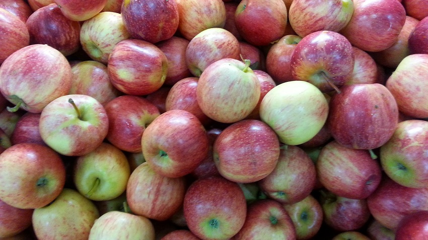

Torta de maçã

Ingredientes
Massa
- 2 xícaras (chá) de farinha de trigo
- 4 colheres de sopa de margarina
- 1 colher (sopa) de fermento pó royal
- 4 colheres (sopa) de açúcar
- 5 colheres (sopa) de leite
Recheio
- 6 maçãs picadas em cubo
- 3 colheres (sopa) de açúcar
- canela a gosto
- 6 colheres (sopa) de suco de laranja
- 2 colheres (sopa) de maizena
Modo de preparo
- Coloque em uma bacia 2 xícaras de farinha de trigo e 4 colheres de sopa de margarina e misture bastante com as mãos até que forme uma farofa. Então adicione 4 colheres de açúcar e 5 colheres de sopa de leite e continue mexendo com as mãos até formar uma massa consistente. Coloque esta massa dentro de um pote ou saco plástico e deixe na geladeira enquanto prepara o recheio.
- Descasque as maçãs e corte retirando o miolo, depois pique em cubos. Coloque as maçãs em uma bacia, junto com 3 colheres de açúcar, canela a gosto, 6 colheres de suco de laranja e 2 colheres de maizena, misturando tudo.
- Retire a massa da geladeira e separe em duas partes. Uma parte, com a ajuda de um rolo de massa estique bastante até que fique fina. Corte em tiras que serão utilizada na coberturra da torta.
- A outra parte da massa será utilizada para forrar uma assadeira, esticando bem para formar o fundo da torta. Em seguida coloque o recheio e cubra com as tiras de maneira alternada. Pincele a torta com gema de ovo e coloque no forno a 270º por 30 minutos ou até dourar a cobertura. Pronto! 😋